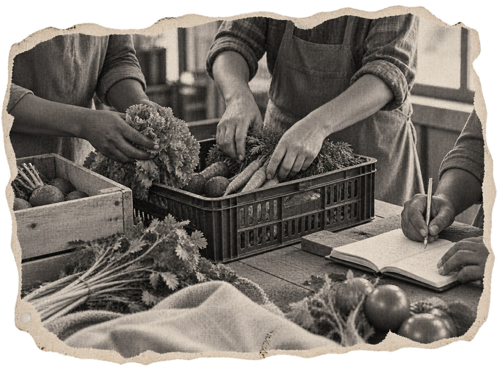
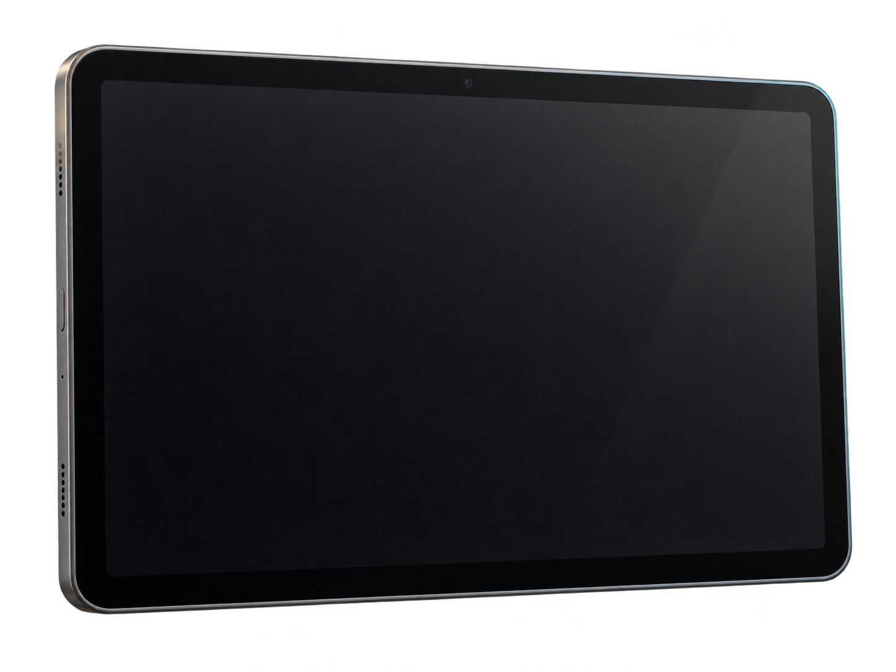
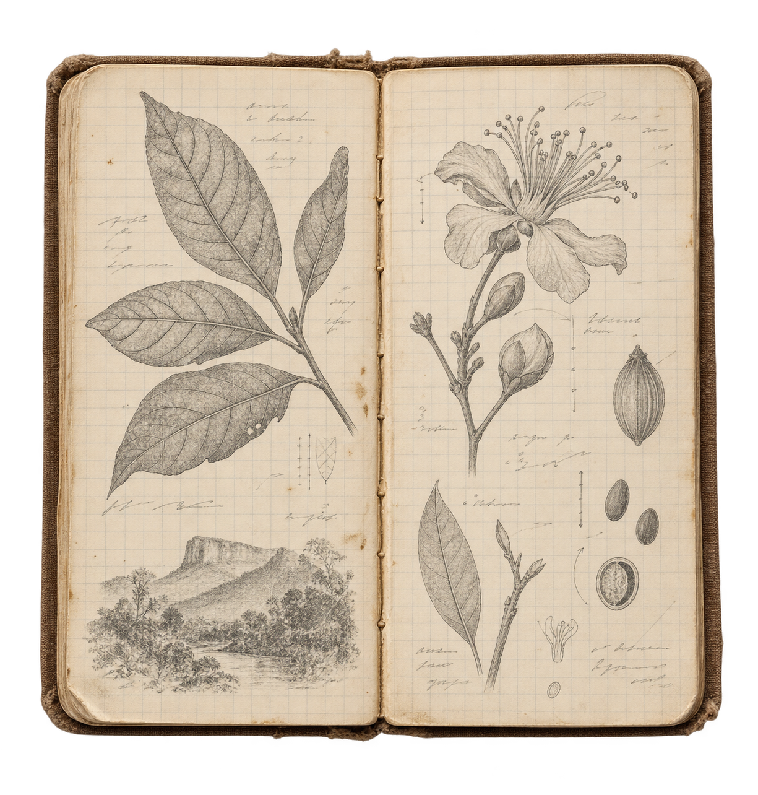
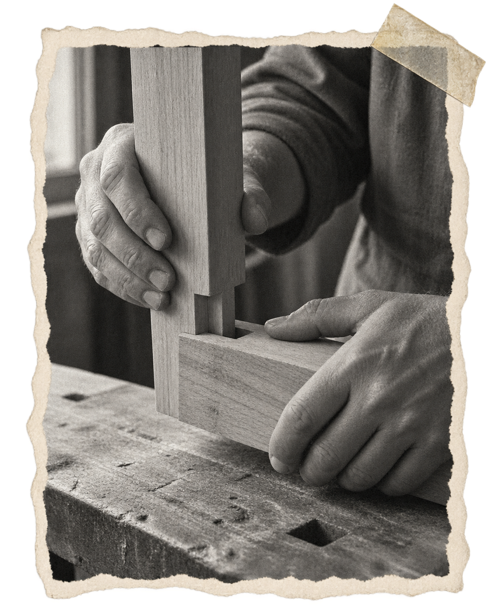

Tecnologia a serviço
da humanidade.
Soberania Labs · Florianópolis · Brasil · rede aberta para o mundo
↓O trabalho é humano.
As ferramentas ampliam o que podemos fazer.
Criamos ferramentas para reduzir o esforço repetitivo, abrir possibilidades e melhorar as condições de quem trabalha.
Mas fazer mais, em menos tempo, não basta.
“Que enorme ganho na produtividade do trabalho!... Mas o salário do trabalhador não aumenta quatro vezes.”
Queremos que os ganhos da tecnologia cheguem a quem trabalha: em tempo disponível, menos desgaste e melhores condições de vida.
É para isso que construímos tecnologia.
Tecnologia
avançada.O controle continua
com quem trabalha.


Produção coletiva
+ Nova atividadePlanejamento, acompanhamento e partilha.
- Plantio de hortaliçasHorta comunitáriaConcluído
- Colheita de cenouraTalhão 3Em andamento
- Separação e embalagemGalpão centralPendente
- Distribuição solidáriaFeira do bairroPendente
Do caderno ao sistema, o conhecimento de quem faz orienta o que construímos. Ferramentas para compreender, adaptar e manter.
Mais capacidade. Menos dependência.
Nem todo conhecimentocabe numa máquina.


# conhecimento em conversa
for registro in observacoes:
contexto = escutar(registro)
investigar(contexto)
compartilhar()conhece os detalhes. Quem vive
conhece o contexto. A pesquisa
abre possibilidades.
Há coisas que aprendemos pesquisando. Outras, fazendo, observando e escutando. Construímos tecnologia colocando o conhecimento técnico em conversa com a experiência de quem vive o problema.
O laboratório começa antes do computador.
E continua além dele.
“Ninguém ignora tudo. Ninguém sabe tudo. Todos nós sabemos alguma coisa. Todos nós ignoramos alguma coisa.”
Trecho reproduzido no Guia do Formador do MEC ↗